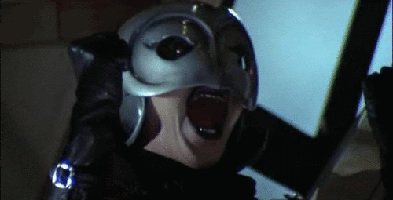
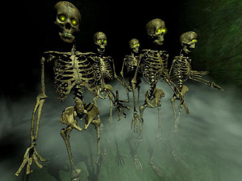

VACIO

105/40/1655
105/40/1655 NUEVO: BARRA DE NOVEDADES.
106/34/1658 NUEVAS CANCIONES.
105/40/1655 MI LIBERTAD DE EXPRESIÓN ARTISTICA SE A VUELTO LIMITADA DEBIDO A MULTIPLES CRITICAS POR PARTE DE MIS MALVADOS LOROS QUE SE CAGAN EN MI TECLADO POR MI NEGLIGENCIA.
105/40/1655 NUEVOS VIDEOS "LITTLE SHOP OF HORRORS - DENTIST" "JIM E BROWN - IM QUITTING PROZAC TO CONTINUE DRINKING"
105/40/1655 NUEVA BARRA DE CONTENIDO (SIN CONTENIDO) 105/40/1655 NUEVA RUTA: HERBERT WEST Y VICTOR FRANKENSTEIN 105/40/1655 SE ME OLVIDO QUE IBA A PONER
HOLA
